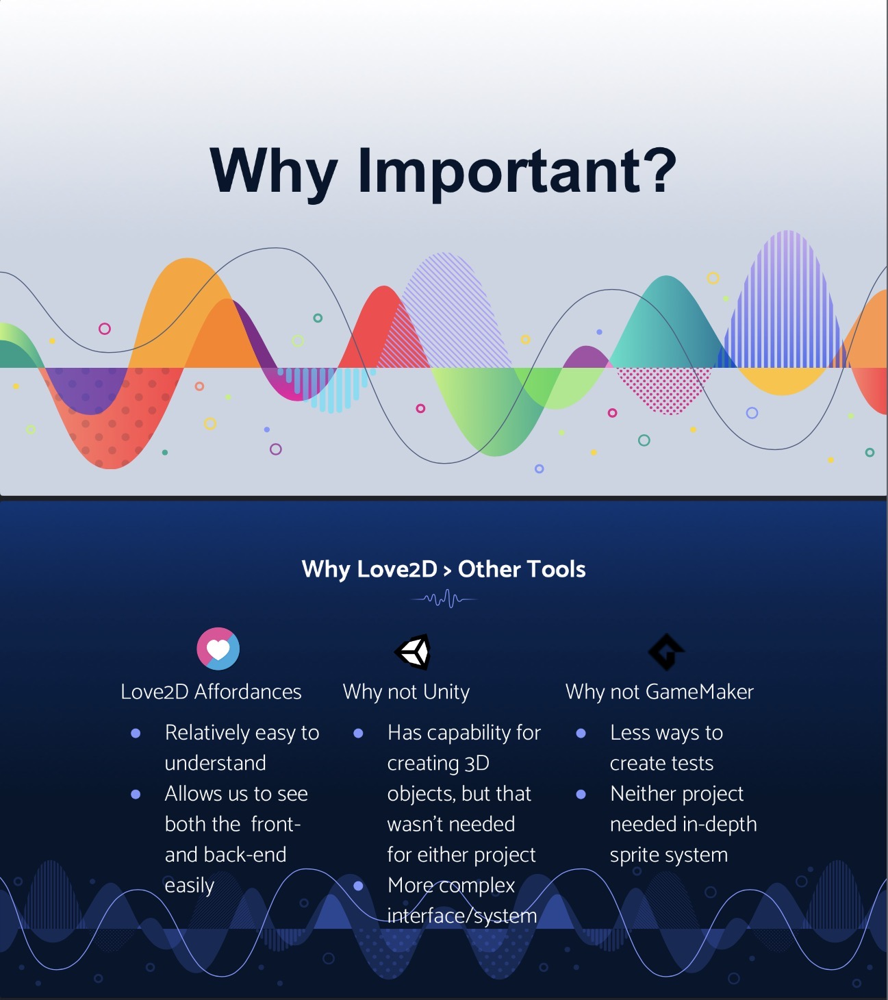

This sample is located in the PaperQuest repository, especially in
drawingHandler.lua, items_list.lua, and ui_list.lua.
It was submitted through PR #119, “UI layout overhaul + meeple integration.”
My Contributions
I used GitHub pull requests, VS Code, Love2D, and Canva to create, debug, and integrate the
meeple UI overhaul. I created new Canva assets, imported them into the project, adjusted
coordinate-based rendering, and used temporary visual debugging overlays to align clickable
regions with the visible interface.
Several development tools supported my work. VS Code helped me navigate and edit the Lua files,
GitHub pull requests helped me compare changes across files and receive teammate feedback, and
Love2D served as both the runtime environment and rendering framework. Canva was also important
because it let me design UI assets with pixel-level placement and sizing instead of guessing
coordinates directly in code.
One specific issue I encountered was aligning clickable hitboxes with the visible meeple UI
assets. Love2D does not provide a built-in layout system, so every button position and size had
to be manually tested. I used semi-transparent rectangles in drawingHandler.lua to
visualize the clickable region during runtime, then adjusted the values until the hitbox matched
the asset. This made debugging faster, though the process still required repeated manual testing.
Self-Learning
Visual Samples

Introductory slide from my Love2D technical tutorial.Comparison slide explaining why Love2D fit our project better than Unity or GameMaker.
My Contributions
I developed and presented the part of our technical tutorial explaining why Love2D was useful for
our project. I created the comparison content, presentation visuals, and speaker notes explaining
Love2D’s strengths and weaknesses compared with Unity and GameMaker which were two other softwares
we had considered using as a group.
Description
My tutorial focused on Love2D, a lightweight game framework that uses Lua. Love2D fit our project
because PaperQuest depended more on resource calculations, button interactions, and frame-by-frame
interface updates than on complex 3D graphics or sprite-heavy animation. In the tutorial, I explained
that Love2D made it easier to connect front-end visuals with back-end game logic because both were
written directly in Lua.
Love2D was useful because it was flexible, relatively easy to understand, and not overloaded with
features our game did not need. Compared with Unity, it avoided unnecessary 3D and component-system
complexity for the time we had to work on the project. Compared with GameMaker, it gave us more
freedom to structure out logic. One sticking point was learning how
love.update(dt) controls timing and continuous resource changes. I was thankful we had
project component "experts" roles because my teammates were able to explain how it worked
without me having to know everything about update.
Process
Sample + Artifact Locations
Relevant artifacts include our Discord server, GitHub organization, PaperGame repository,
IdleDesign repository, GitHub issues, pull requests, and the GitHub project board.
My Contributions
I participated in Discord communication, code review, GitHub pull requests, task planning, and
repository organization. My main role focused on UI design, asset implementation, usability
revisions, and coordinating visual systems with gameplay development.
Description
Our group used Discord, GitHub issues, pull requests, and separate repositories
to organize our work. Discord channels separated debugging, scheduling, task planning, resources,
and code review so that conversations stayed organized. The IdleDesign repository stored design
artifacts such as screenshots, interviews, prototypes, and brainstorming materials, while the
PaperGame repository held the actual game code.
Overall, our process worked well because we delegated responsibilities while still reviewing each
other’s work. Maya focused on math and balancing, Aubrey worked heavily on class systems and code
organization, Ian contributed to storytelling and sound, and I focused on UI design and visual systems.
The main challenge was coordinating branches and dependencies, especially when one person’s work
depended on another person’s assets or code. Regular Discord updates and pull request reviews helped
us resolve those issues and avoid merging unfinished work into main.
Collaboration
Artifacts
Relevant examples are in the PaperGame repository: PR #119,
“UI layout overhaul + meeple integration”; PR #122, “Add dialogue handler with conditionals”;
and PR #54, “41 meeple button functionality.”
My Contributions
I created pull requests, responded to teammate feedback, reviewed code written by others, and
revised implementations based on collaborative discussion. I implemented the UI layout overhaul
and dialogue handler work in PR #119 and PR #122, and I reviewed Aubrey’s meeple button work in
PR #54.
Description
PR #119 was a major collaborative instance because my UI layout changes affected rendering,
clickable regions, and progression visibility. Maya suggested moving some meeple drawing logic
into a more appropriate abstraction, and Aubrey identified visibility issues with factory-related
buttons. I revised the implementation based on their comments before the pull request was merged.
PR #122 also required collaboration because Ian reviewed my dialogue handler and noticed logic that
could be simplified. I updated the branch based on that feedback. I also performed a code review on
PR #54, where I noticed that other:isMousingOver(x, y) was being called twice in the
same loop. I suggested storing the result once and reusing it, and Aubrey updated the code. These
examples show that my collaboration involved review, revision, debugging, and communication rather
than only committing my own code.